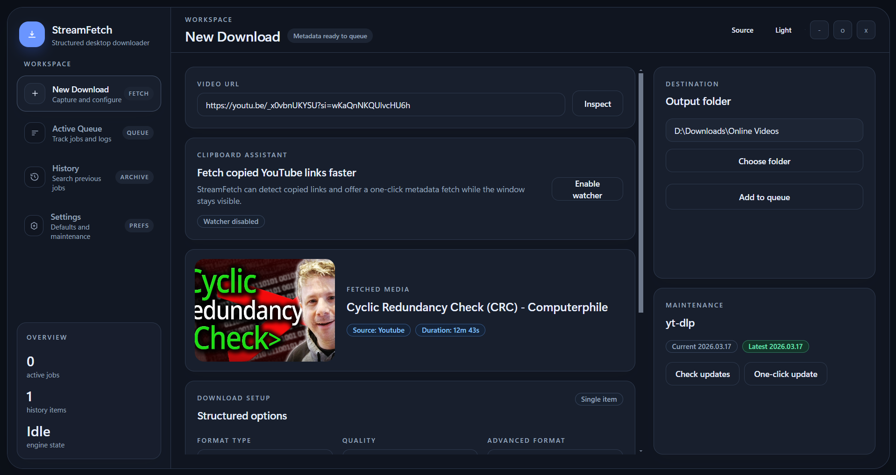
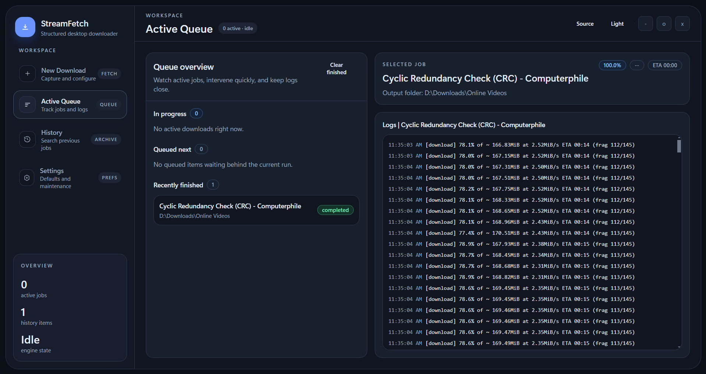
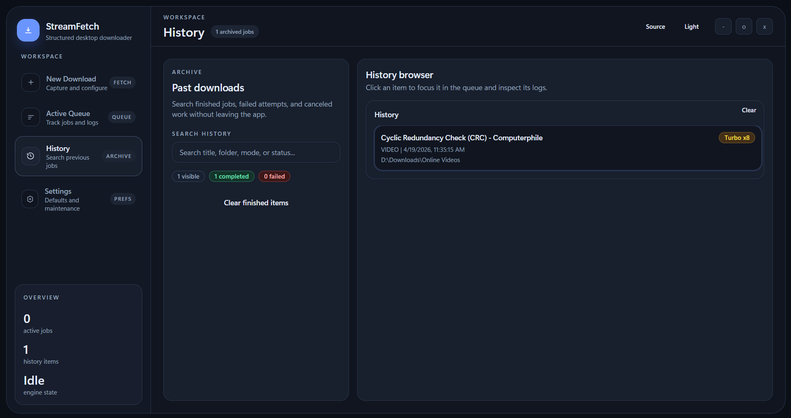
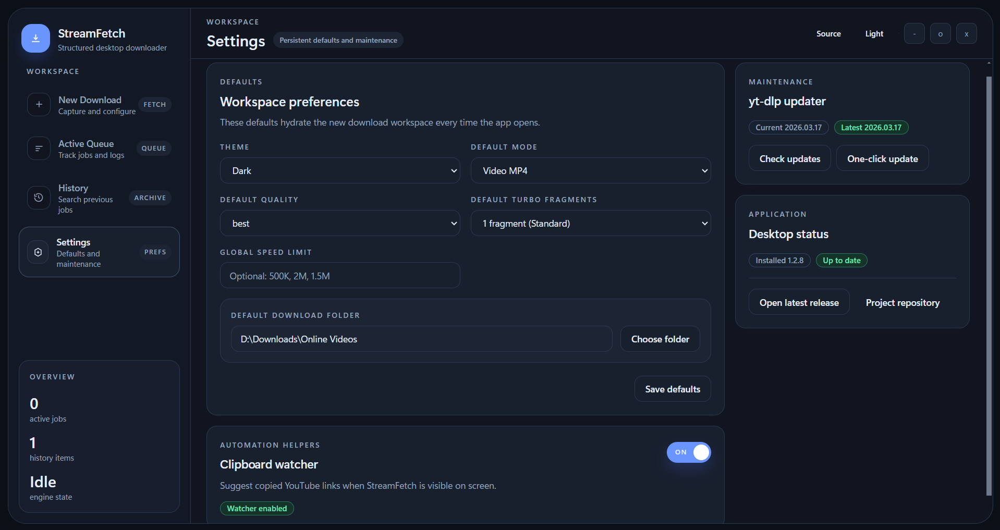

Queue Engine
Manage multiple jobs with clear states, progress bars, ETA, and scoped job logs.
Desktop App (Windows / macOS / Linux)
StreamFetch combines Electron, React, and yt-dlp into a focused desktop app for reliable video and audio downloads, including Smart Clipboard Watcher for instant URL pickup, Visual Clip Studio for precise trimming, a cleaner Turbo Mode acceleration panel, and guided auth recovery when links need retries.
Feature Highlights
Manage multiple jobs with clear states, progress bars, ETA, and scoped job logs.
Catch copied YouTube links while the app is visible and trigger metadata fetch from an in-app action toast.
Trim single videos with draggable start/end handles, a cleaner preview, and exact time inputs when needed.
Pick exact format IDs when auto mode is not enough for your target output.
Fallback from browser cookies to `cookies.txt` import when extraction is blocked.
Use the redesigned acceleration module to switch Turbo cleanly, tune fragment count, and read status at a glance.
Detect both app and yt-dlp updates so your downloader stays current.
Typical Workflow
Paste a link manually or let Smart Clipboard Watcher surface a copied YouTube URL with a one-click Fetch action.
Choose video or audio mode, quality profile, optional Clip Studio trimming, folder, and optional format ID.
Add items to queue, optionally enable Turbo Mode from the structured acceleration panel, and monitor status, speed, ETA, and logs.
Retry with browser cookies or exported `cookies.txt` when authentication is required.
App Screens




Paste a link, fetch metadata, trim with Clip Studio, enable Turbo download, and queue the job.
Monitor the overview, inspect the selected job, and follow logs while downloads are running.
Review previous downloads, failed jobs, and archived activity in one structured list.
Save defaults, manage clipboard watcher behavior, and access app and `yt-dlp` updater options.
Security Model
Node integration off: renderer cannot directly call Node APIs.
Context isolation on: UI code is isolated from the preload bridge.
Whitelisted IPC: only approved channels are exposed to renderer.
Validated process args: download commands use controlled spawn arguments.
Grab the latest setup/build from GitHub Releases (Windows setup, Linux AppImage, macOS DMG) and start fetching from pasted or copied links in under a minute.